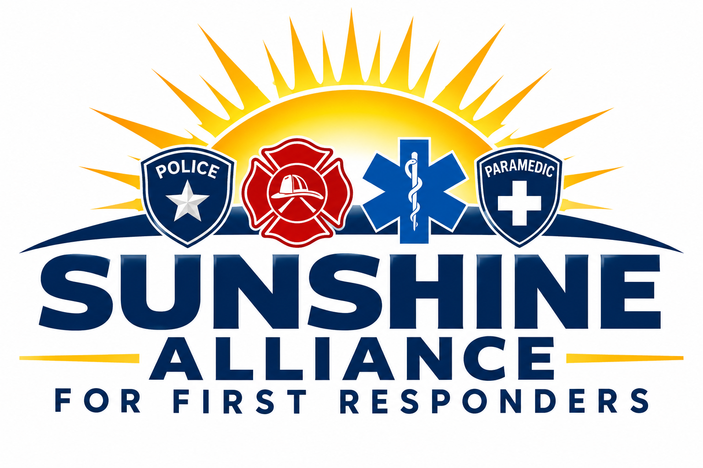

Mental health, trauma, substance use, wellness, and peer-support information
Specific resources and partner links can be added as they are reviewed.

Resources
The resource library is organized by audience so visitors can quickly find the information most relevant to them.
Specific resources and partner links can be added as they are reviewed.
Family-focused materials and referral options can be added here.
Agency toolkits, training materials, and policies can be organized here.
Resources should be reviewed for accuracy and permission before publication.
Emotional or crisis support: Call or text 988.
Medical emergency: Call 911.
Nonurgent SAFR contact: See the nonurgent-contact information below.
Nonurgent Contact
If you are not experiencing a crisis that needs immediate support, the existing SAFR process allows a request for contact within two business days.
This draft website does not transmit this form. The current form service, privacy process, and receiving organization must be connected before launch.
SAFR is only able to communicate with individuals who initiate contact by calling 1-866-4FL-HERO or who submit the approved contact form. If a form is submitted for a friend or family member, staff may not be able to initiate contact with that person.
Out of concern for safety, the current website states that staff are unable to return phone calls or emails involving domestic violence. This language should be reviewed and approved before the new site launches.